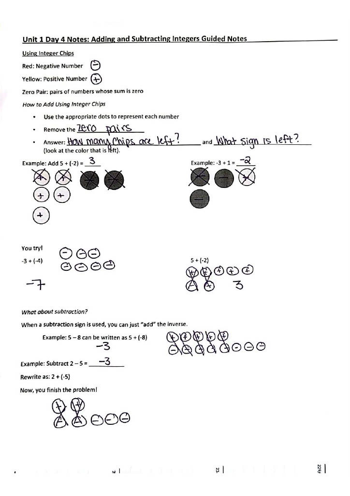
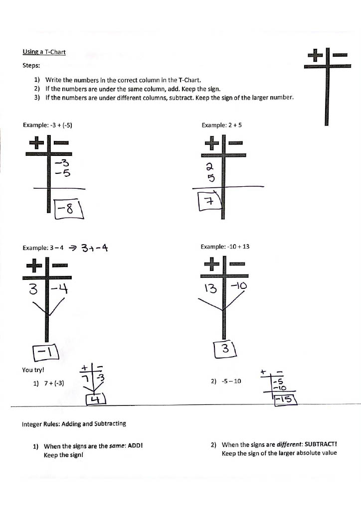
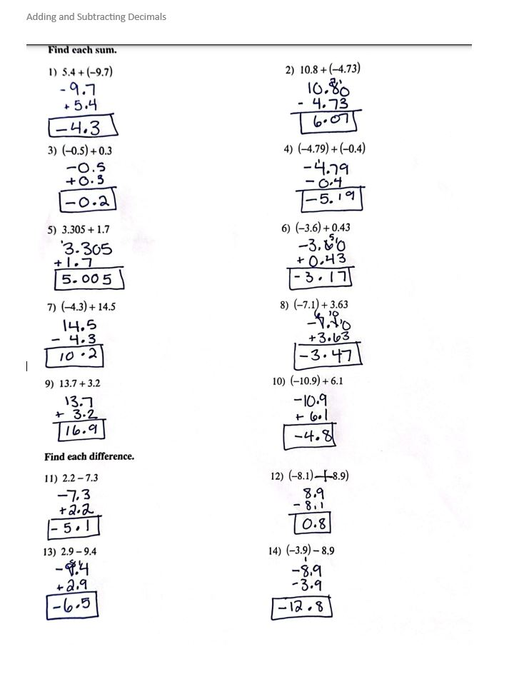
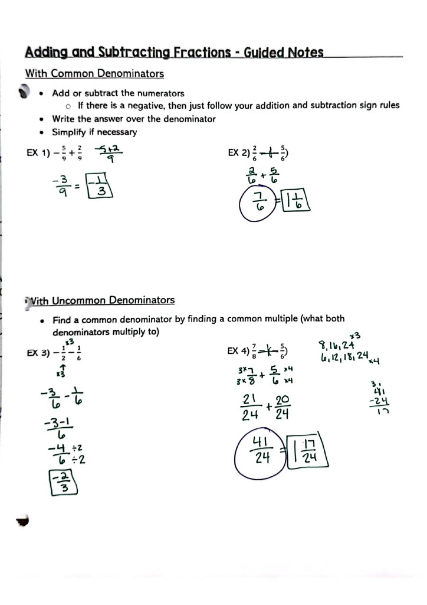

Learning Target 2:
I am adding and subracting rational numbers.
This means that you can add and subtract integers, decimals, and fractions. You can also model addition and subtraction on a number line.
Glossary
- Integer
- A positive or negative whole number, including zero.
{...-3, -2, -1, 0, 1, 2, 3, ...}
- Decimal
- A number that has a decimal point followed by digits that show the fractional part.
0.01 (one hundreth)
-45.6 (negative forty-five and six tenths)
- Fraction
- A number that represents a part of a whole.
2/5 (two fifths)
- Rational Number
- A number that can be made as a fraction of two integers.
In other words, a/b is a rational number when a and b are numbers like -2, 7, or 123. But be careful: b cannot be zero.
Video Help
Adding and Subtracting Integers
Adding and Subtracting Decimals
Adding and Subtracting Fractions
Worked Examples




Online Practice
Adding Integers
Subtracting Integers
Add and Subtract Decimals
Add and Subtract Fractions
Add and Subtract Rational Numbers